Set Name: Twisted Time Train
Set Number: 6497-1
Theme: Time Twisters / Time Cruisers
Year released: 1997
Price: Set no longer sold in stores, price may very if purchased from the internet.
Piece Count: 296
Minifigures Included: 4
-The Minifigures-
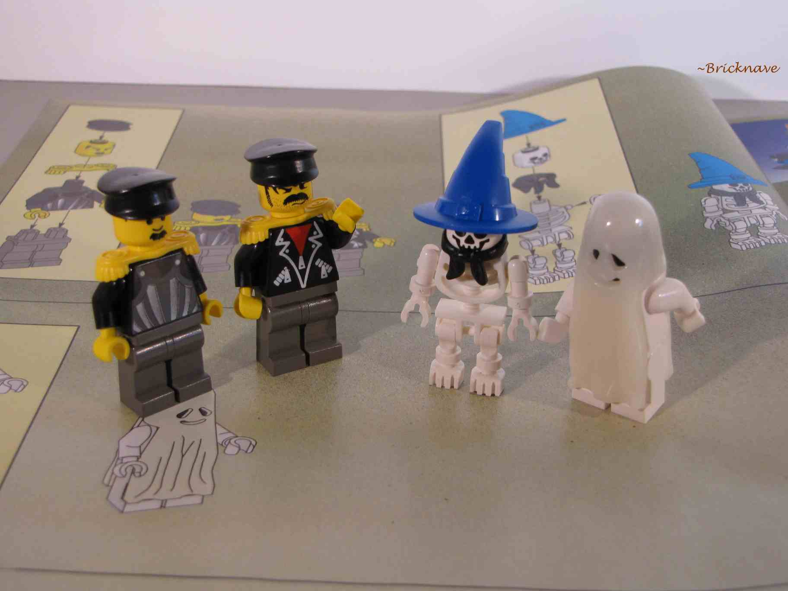
The passengers on the Twisted Time Train: Two bad-looking chums who seem to be wearing some kind of military uniform, a wizard skeleton, and a ghost.
-The Locomotive-
Time Twister 1 will guide you through the building of the locomotive!
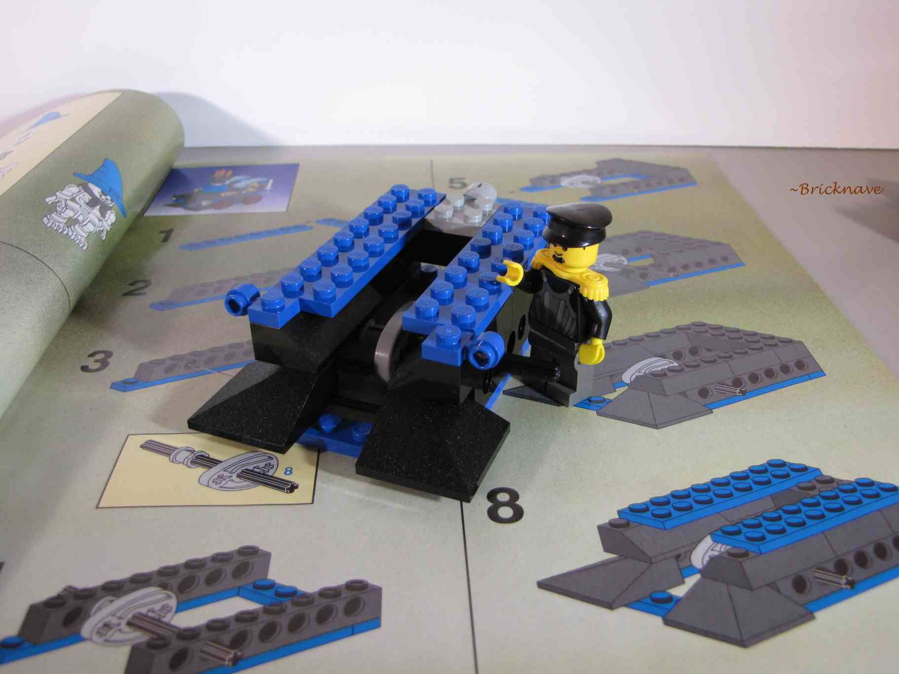
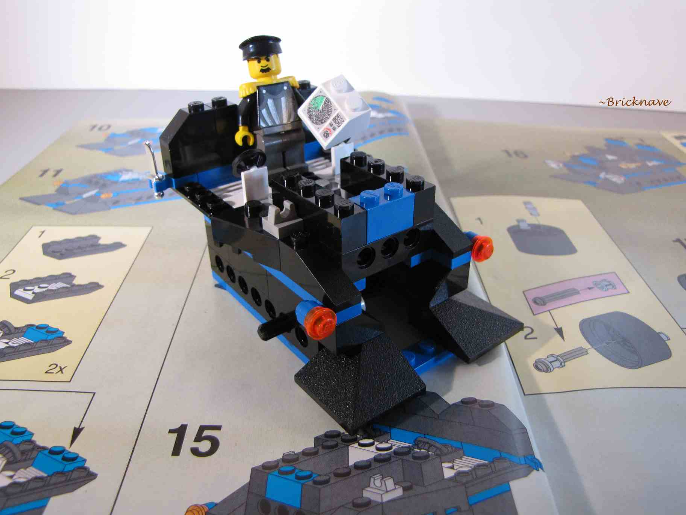
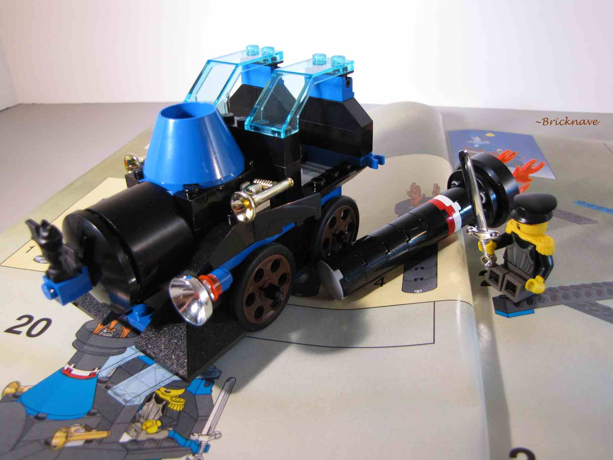
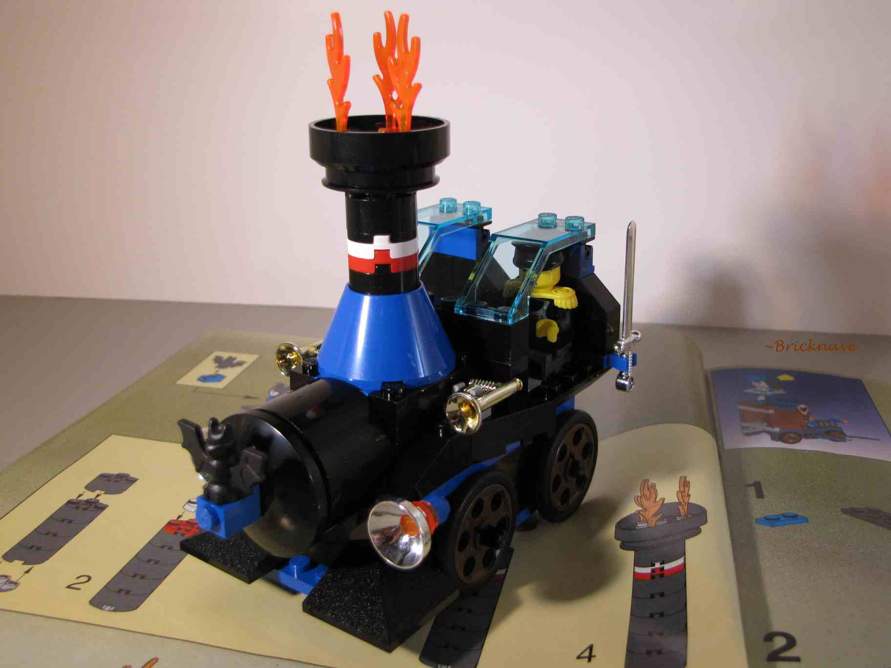
And walla, the locomotive!
It is a blend of futuristic elements with a steam train design.
When it is pushed, the funnel moves up and down (as you'll see later.)
The cabin has a radar screen, which is interesting, because I don't think radar works when the vehicle is traveling at light speed.
Or maybe it isn't traveling at light speed, maybe it goes through worm-holes ...
Also, at the sides are holders for a sword and a knife.
I'm assuming the leader of the Time Twisters wields the sword during missions, whoever the leader is.
-The Skeleton Car-
Now for the next section, which I call the skeleton car.
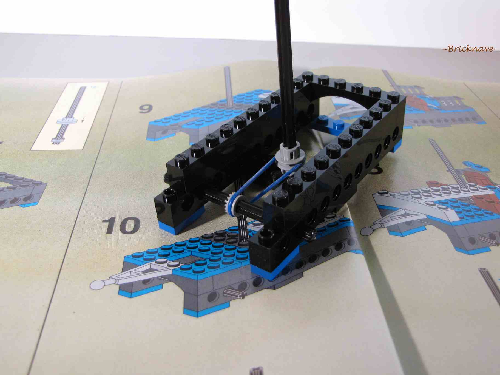
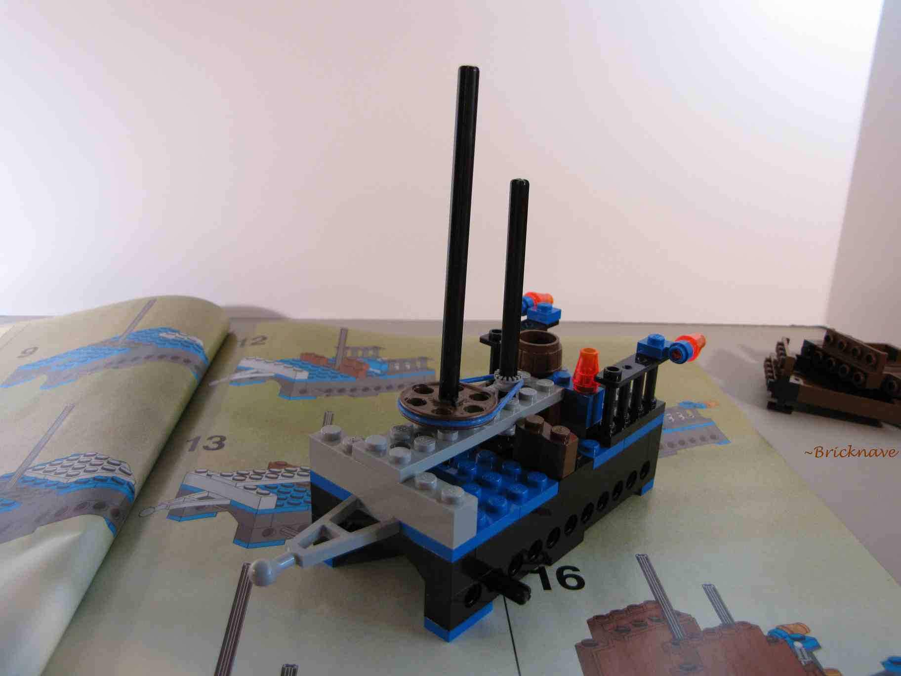
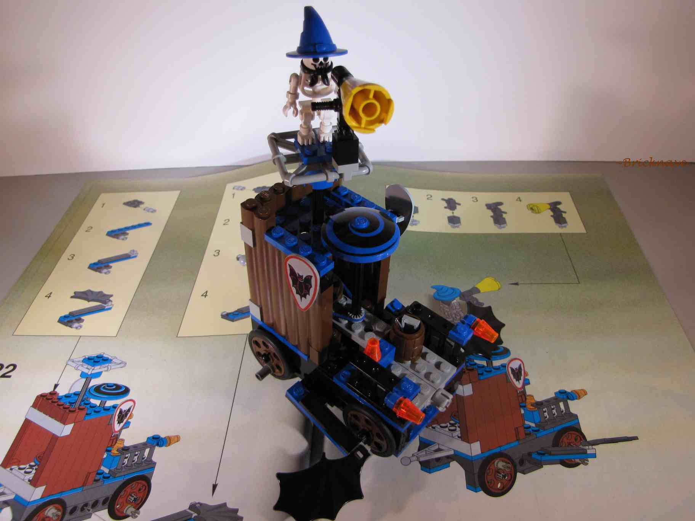
The build is fairly complex and challenging.
Two parts of the car turn when the wheels move. Both functions use rubber bands.
The skeleton on top appears to be spamming into the megaphone while spinning.
The car also has somewhat of an interior, which is a balcony with a barrel that contains a knife and dynamite.
-The Ghost car-
The final car, which I call the ghost car. It appears to be a haunted castle on wheels.
Time Twister 2 and his ghostly accomplice will guide you through most of the building process!
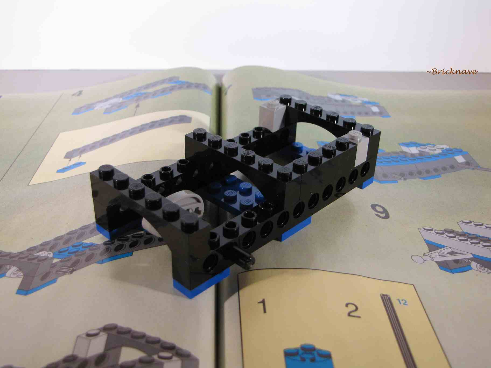
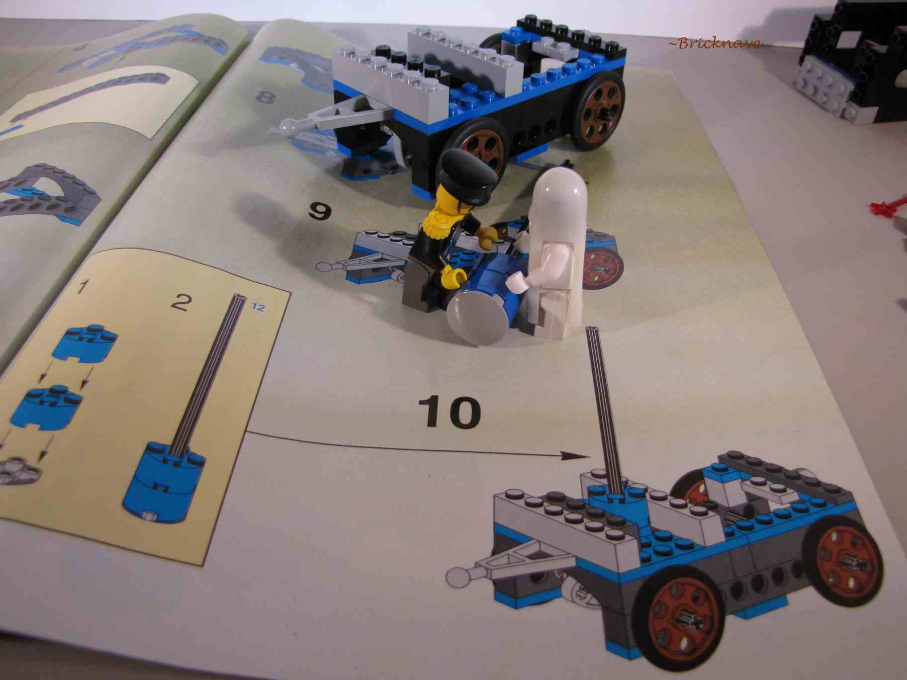
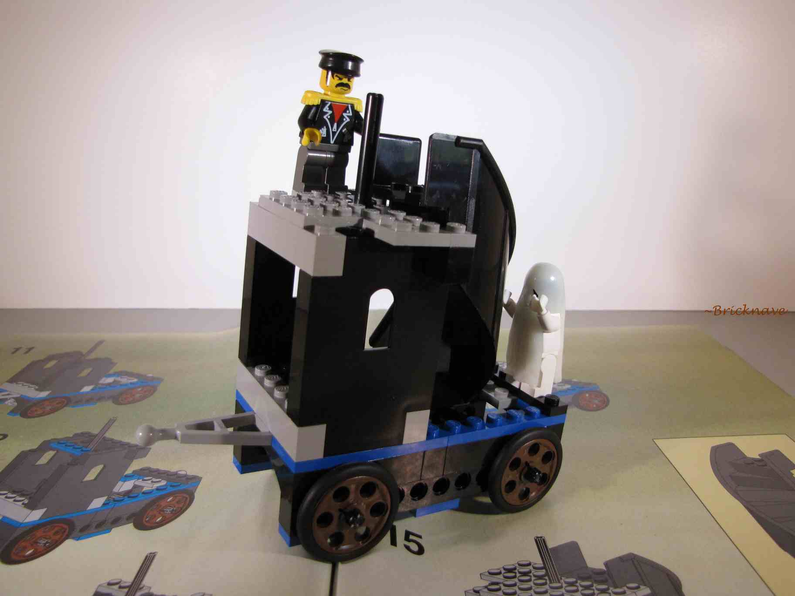
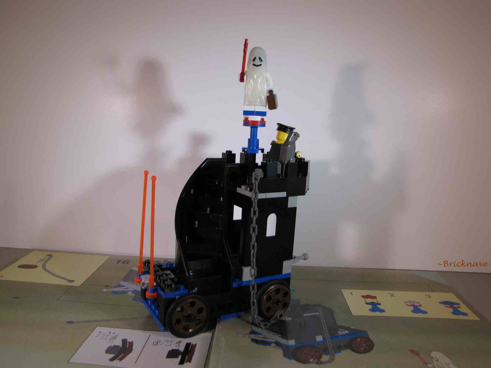
As the car moves, the ghost passenger spins around.
I wonder why the ghost has a magic wand? It must be the spirit of a wizard.
-The Functions-
The Functions of the locomotive and the cars moving in unison.
-Conclusion-
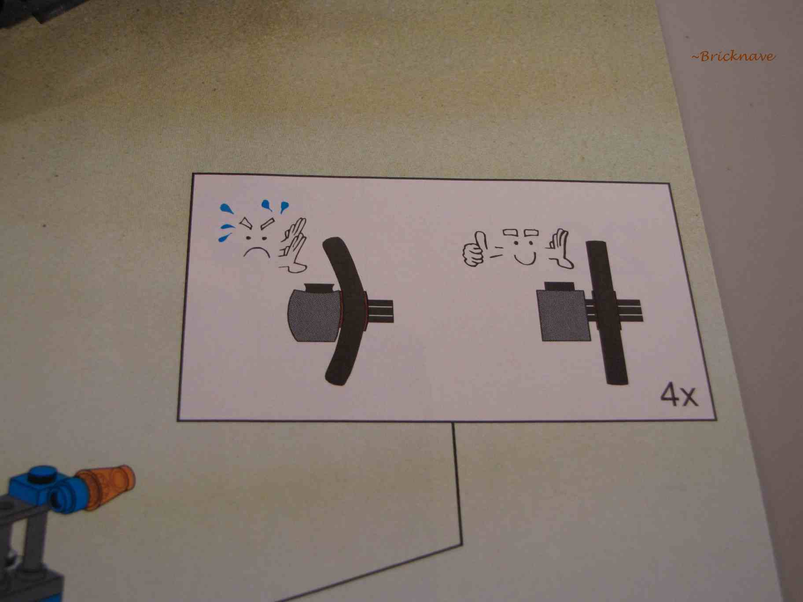
An interesting part of the instructions.
The upsides of the set are the individual functions for the cars and the variety of pieces!
Each of the functions work great when their respective cars are pulled individually!
The combination of castle elements with western and town elements make this set somewhat of a three-in-one set.
The downsides are the hovering pair of wheels and lack of interior for the non-locomotive cars.
Like I've stated before, one pair of wheels is always lifted into the air when the whole train is pulled altogether.
The interior of the locomotive is as good as it gets, but the walls on the other cars are really used to cover up the Technic axles, which is understandable.
Although, I still think they could've expanded the shelter of the skeleton car, maybe adding walls and a removable roof to the barrel-area.
There must be more shelter on the cars to protect time-traveling passengers from cosmic time travel rain.
Downsides aside, this set is great for getting ideas for Technic-related functions and for parts!